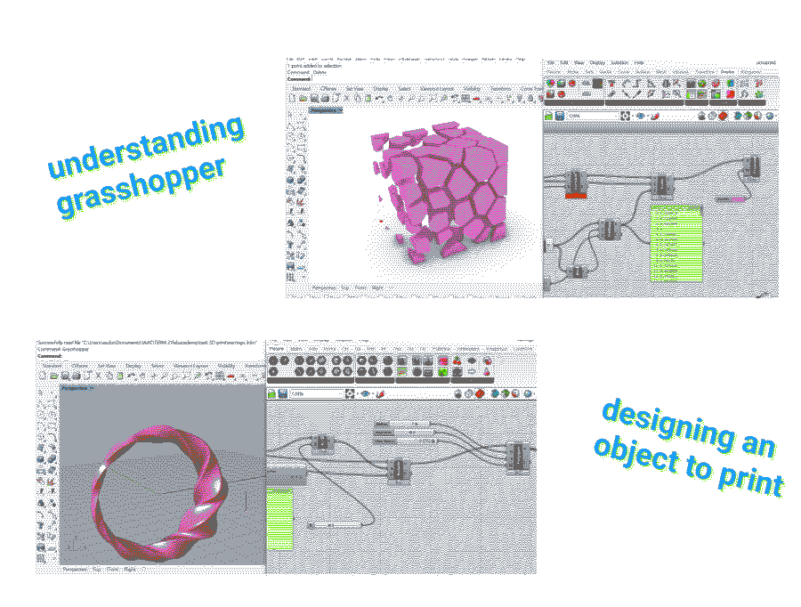
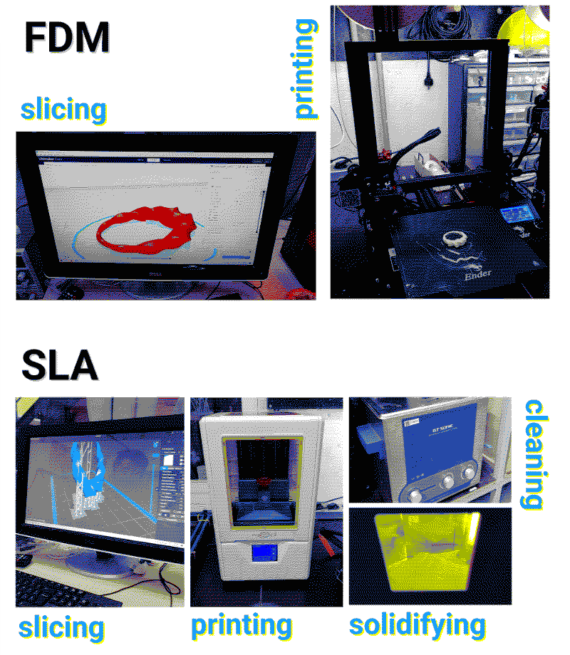

3D printing and scanning
fab academy week 5
This week’s fabacademy topic was 3D printing, the more appropriate term is “additive manufacturing” (class content here). We talked about the history of 3D printing and the different techniques we can use. The technology actually existed since the 80’ but because of patents, it remained closed until around 2005. At that moment, open source projects (cf MakerBot) started to emerge to give access to this technology to individuals. It is quite impressive to see how the technology has evolved and how we can now even print organic material like tissues and cells.
In the fab lab we can use PLA and resin 3D printers. Another technique I would really like to try is the paste printing. Some machines exist to do it but are quite expensive. Eduardo was showing 2 paste printers they made at FabLab BCN hacking a Ender 3 Creality printer by adding 3D printed parts. To run it we need to generate the gcode with Grasshopper so I think this is what motivated me to start learning how to use Grasshopper.
We also saw this week how to 3D scan. One of the techniques is photogrametry which consists in taking a lot of pictures from different angles of the object we want to scan and after use a software for 3D reconstruction (for example Meshroom / AliceVision which is open source). Another technique is light and sensors 3D scanning and we were able during the class to use a kinnect to scan objects or people.
designing
The task of the week was to 3D print an object we designed. I spent some time deciding if I wanted to make something useful but not necessarily involving a lot of new skills OR make something useless just to try new programs and features. In the end my choice went to making something useless to try Grasshopper.I found Grasshopper very cool. I wish I had been exposed to such a visual tool before. Even though my background is not in design, I studied mathematics a lot at the beginning of my studies and I feel like it is a real lack not to use visual tools like this one.
The last two weeks I was happy with Fusion 360 as it seemed easy to understand but now that I see Grasshopper interface I might change my mind! It is just a lot of information and training because they both are completely new to me this year.
Tutorials I followed:

printing
Fused Deposition Modelling (FDM)I first used Ender 3 printer to print one earring just to test. Before printing I need to open the stl file in a slicer program, here with Cura to define different parameters such as the support it needs (usually an object needs support from 45° inclination), the quality, the percentage of filling (20% is enough most of the time), the temperature (that we can find on the material datasheet)...
The slicer program creates a gcode file with a set of instructions for the machine, we save it on a sd card that we can insert in the printer.
The printing time was 1h23 for one earring. The result was nice but with some holes at the bottom probably because the bed was a bit too close to the nozzle, that could be solved by levelling the bed.
Stereolithography (SLA)
I did a second experiment of printing the same earrings but with resin this time to have a better result. Edouardo helped Fiorella and me preparing the file and the machine.
The resin printing is a completely different technique, the material (resin) is in a bed at the bottom with a screen that solidifies the resin with light is and the bed is at the top going up and down. The printing time here was about 6 hours. We fitted on the same plate Fiorella’s and my objects to optimize the printing time.
The quality was great in the end, but there were many additional steps compared to the PLA printer. We had to clean the objects from excess of resin in alcohol in a ultrasonic cleaner for 5 minutes and after that put it in some sort of microwave that hardens the resin with UV light during 15 minutes. An alternative is to leave it in the sun.
Next experiments Now the next experiment I would like to do is the paste extrusion with the hacked Ender 3. I want to use some of the waste we collected during the biomaterials seminar so I am looking for recipes using coffee grounds and beer spent grains. I want to find more inspirations of 3D printed projects to see all the potential of it including at a large scale for furniture or even for contruction similarly to the walls the students in Valldaura did this year with clay that they harvested there.


tools I worked with
RhinoGrasshopper
Ender 3 printer (Creality)
Formlabs resin printer
ultrasonic cleaner
learnings
- Make sure that the file you want to send for printing doesn’t have any gap and all surfaces are connected
- Check the bed levelling before using the 3D printers